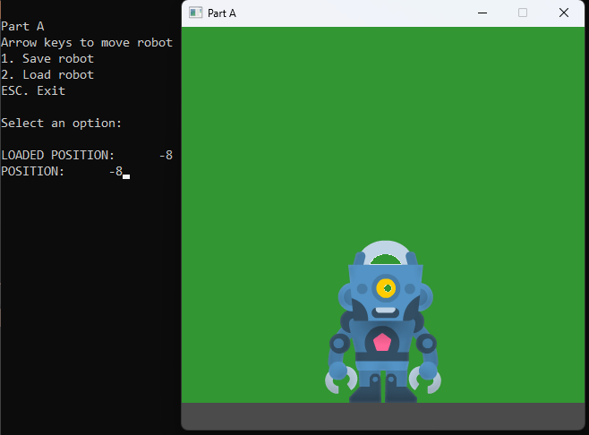

📘 Reading CSV Data Using `ifstream` in C++
🧾 Overview
In C++, the ifstream class (from the <fstream> header) is used to read data from files. To read CSV (Comma-Separated Values) data, you typically read each line as a string and then parse the line by splitting it on commas.
This approach is manual, but it gives you full control over how the data is interpreted and processed.
🧠 Key Concepts
Line-by-Line Reading
Use std::getline(file, line) to read each row of the CSV file.
getlinewill read a line from the stream.- The first parameter is the stream to read.
- The second parameter is the string to store the data into.
getline will read until it encounters the \n character OR the end of the stream.
String Stream Parsing
Use std::stringstream to split each line into fields using std::getline(ss, field, ',').
- Take the string from step 1 above and create a stringstream.
- Use the stringstream with getline to read pieces of CSV data.
- You can tell getline what character (the delimiter) to look for instead of
\n.- Give getline a 3rd char argument. getline will use this character instead of
\n.
- Give getline a 3rd char argument. getline will use this character instead of
getline will read until it encounters the character OR the end of the stream.
std::stringstream ss(line);
std::getline(ss, field, ',');Reading Multiple Lines
Use the stream's eof() method to check if you are at the end of the file OR use the return type from calling std::getline.
while(not file.eof()) {
//read the line
//parse the line using stringstream
}
//OR...
while (std::getline(file, line)) { //read the line
//parse the line using stringstream
}🧪 Storing Data in a Vector
You can store parsed data in a container like std::vector for further processing:
struct Student {
std::string name;
int age;
std::string major;
};
std::vector<Student> students;
while (std::getline(file, line)) {
std::stringstream ss(line);
std::string name, ageStr, major;
std::getline(ss, name, ',');
std::getline(ss, ageStr, ',');
std::getline(ss, major, ',');
students.push_back({name, std::stoi(ageStr), major});
}🛠️ Basic Example
Suppose we have a file students.csv:
Name,Age,Major
Alice,21,Computer Science
Bob,22,Mathematics
Charlie,20,Physics🧱 Required Headers
#include <iostream>
#include <fstream>
#include <sstream>
#include <string>
#include <vector>Reading a Simple CSV File
int main() {
std::ifstream file("students.csv");
std::string line;
if (file.is_open()) {
// Read header
std::getline(file, line);
std::cout << "Header: " << line << "\n";
// Read data rows
while (std::getline(file, line)) {
std::stringstream ss(line);
std::string name, age, major;
std::getline(ss, name, ',');
std::getline(ss, age, ',');
std::getline(ss, major, ',');
std::cout << "Name: " << name
<< ", Age: " << age
<< ", Major: " << major << "\n";
}
file.close();
} else {
std::cout << "Failed to open file.\n";
}
return 0;
}⚠️ Common Pitfalls
- Not checking if the file opened successfully
- Assuming all rows have the same number of fields
- Using
std::stoiwithout error checking
✅ Best Practices
- Always validate file opening and data format
- Use
std::getlinewith a delimiter for parsing - Consider using a CSV library for complex files (e.g., Fast C++ CSV Parser)
💻 Practice it! Reading CSV Files
🧩 Part A-3 LoadPosition
- Open the
Day10.cppfile. - Add code to the
LoadPositionmethod. - Open the file for input.
- If the file is open:
- Read the line from the file.
- Parse the line using
getline. Remember that theworldXis the second part of the line. - Print to the console "LOADED POSITION: " and the
worldX.
- Else:
- Print the file could not be opened.
- If the file is open:
- Close the file.
- Return the
worldXvalue. - Run menu option
3. Read CSV fileto test your code.
🎯 Result
